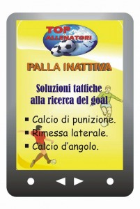
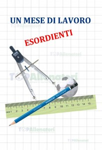
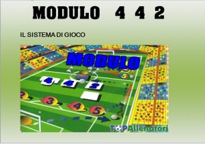
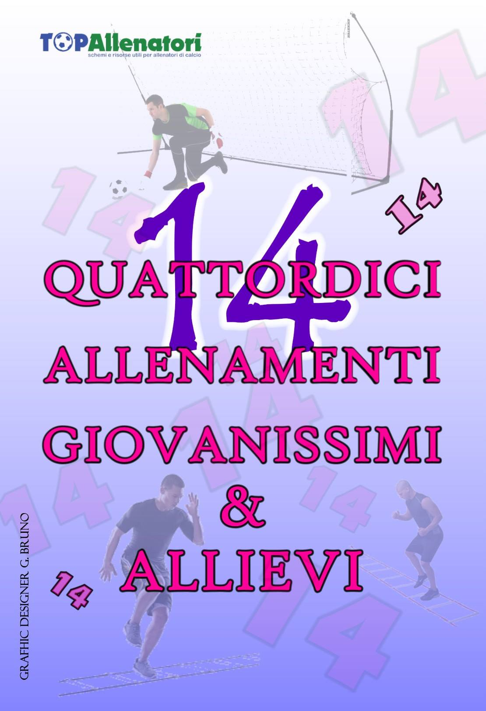
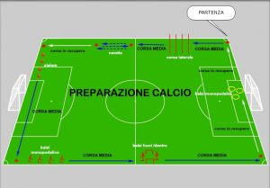

| CALCIO GIOVANISSMI LE PRIME CINQUE ALLENAMENTI IN RITIRO Dieci allenamenti totali per cinque giornate di ritiro, una sessione mattinale e una pomeridiana, completa dall’attivazione alle partite a tema. € 10,00 |
|
| PREPARAZIONE FISICA PER RUOLI La seconda fase della preparazione atletica prevede esercitazioni pratiche e allenamenti specifici, un concetto perseguibile per ogni categoria per mirare più precisamente stimoli adatti per i ruoli di gioco. € 10,00 |
|
| GIOCO CON IL 4 3 3
“Gioco con il 4 3 3” un ebook rivolto a tutti gli allenatori di calcio, che principalmente usa questo modulo tattico: quattro difensori tre centrocampisti e tre attaccanti. L’obiettivo di questo ebook, e quello di evidenziare una serie di proposte pratiche per allenare gli sviluppi offensivi. Spunti da poter inserire arricchire la settimana di lavoro. 20 gli esercizi proposte, scritte e evidenziate con immagini di riferimento. € 10,00 |
|
| Pulcini: 10 sessioni di allenamenti/giochi “Il Mesociclo”Un E-Book indispensabile per gli istruttori di scuola calcio. Un Mesociclo carico di esercizi accompagnate da immagini illustrativi., per un totale di 40 esercitazioni. L’ebook viene inviato tramite mail in formato pdf: il file pdf è un comodo e affidabile format per voi Allenatori. € 10,00 |
|
|  | Palla Inattiva Molti gol vengono segnati direttamente o sugli sviluppi di una situazione di Palla Inattiva. Ogni stagione, quasi un terzo delle reti realizzate proviene dagli sviluppi di questa tattica a palla ferma.Un E-Book Da 15 Gol A Stagione! che grazie al book elettronico in formato pdf pronto per essere letto e messo in pratica, grazie alle esercitazioni messe in mostra. € 9,00 |
 |
GIOCO IMPARO MI DIVERTO Trenta esercizi da inserire nelle vostre settimane di allenamenti; giochi ludici per la scuola calcio, primi calci, piccoli amici, pulcini, esordienti. € 14,00
|
|  | Un Mese Di Lavoro Esordienti Un E-Book che spalanca una visione oltremanica per gli Under 13. L’autore kris Blakeston in collaborazione con Luciano La Camera in questo e-book inserisce due novità allenanti nelle sedute per questa categoria :I giochi condizionali e lo switch della tattica, l’ebook presenta numerosi esercitazioni accompagnate da immagini di sostegno e viene inviato tramite mail in formato pdf. € 10,00 |
|  | Modulo 4 4 2
un eBook innovativo che illustra il metodo circuiti per allenare questo sistema di gioco. Si base su due forme geometriche: “La Croce” e “Il doppio quadrato”: il modulo 4 4 2 rappresenta un sistema di gioco intelligente e formativo per i calciatori, e per questo, l’ebook mostra e approfondisce come allenare la tattica anche in una seduta utilizzando tali dal riscaldamento alle partite a tema. Il book elettronico viene inviato tramite mail in formato pdf. £ 11,00 |
|  | 14 Allenamenti Giovanissimi e Allievi – 14 sessioni completi – 65 esercitazioni – test di valutazioni tecniche del giocatori con 6 circuiti di prove: un test di valutazione indispensabile per capire il livello dei tuoi calciatori, un testo che aiuterà l’allenatore a verificare (occhiometro) e valutare qualità e carenze. L’ebook viene inviato tramite mail in formato pdf. € 10,00 |
|  | L’ebook “Preparazione calcio” proposta di 14 sedute(inizio ritiro) categorie Juniores – Berretti – Prima squadra. L’ebook è in formato pdf, ogni seduta propone una descrizione semplice, completa con obiettivi sia condizionali (con esercizi specifiche per ruoli) che di tecnica e di tattica.€ 12,00 |
 – |
Post Preparazione Calcio: Quali allenamenti fare dopo la prima fase di ritiro? Come impostare i carichi di lavoro? Gli obiettivi condizionali tecniche e tattiche subiscono variazioni? La preparazione è una fase per gettare le basi tecniche tattiche e condizionale per la tua squadra, il Post Preparazione Calcio” avanza l’idea a voi Allenatori e staff, una continuità di lavoro proponendo esercizi a gruppi e per ruoli per le varie tematiche. Sette sedute complete per la Prima squadra – Juniores – Allievi £ 9,00 |
 |
32 esercitazioni per calciare in porta:Un e-book che focalizza e propone esercizi con fondamentali calcistiche come il controllo e il controllo orientato prima di calciare – esercizi e finalizzazioni nel modulo di gioco nella fase offensiva con il calciare in porta – calciare in porta dalle palle in attive, come da una rimessa laterale o da una punizione – esercizi di velocità con il tiro in porta. € 10.00
|
 |
ALLENAMENTO PRIMA SQUADRA SESSIONE OTTOBRE “Allenamento ottobre” per sessioni d’allenamento per la prima squadra (1° categoria 2° categoria 3° categoria Juniores) . € 9.00 |
 |
Mesociclo Allenamento Novembre Un “UPGRADE” di nuovissimi esercizi per la programmazione di Novembre. € 9.00 |
 |
16 ESERCITAZIONI GIOCHI PER I DAY CAMP/ Un E-Book indispensabile per gli istruttori e mister’s che andranno ai Day campo,per far divertire i ragazzi, esercizi come il calciare o la conclusione a rete, gioco molto ricercato dai piccoli atleti, e per questo abbiamo inserito esercizi che possono anche allenare e allo stesso momento far divertire il gruppo. 16 stazioni di puro divertimento ma allenando le capacità di base, un e-book che vi completa il lavoro ai centri sportivi estivi. € 9.00 |
 |
Le Prime Cinque Doppie Sedute In Ritiro/ Gettare le fondamenta nelle prime giornate d’allenamento, specialmente con una nuova conduzione rappresenta un argomento alquanto ostico. Mille le cose sono da coordinare e mostrare durante le prime uscite in campo durante il ritiro € 10,00 |
 |
RADUNO: 10 ALLENAMENTI PRIMA DEL RITIRO Top Allenatori propone una scheda di mantenimento (Ebook in formato PDF) di 10 allenamenti individuali, inserendo attivazioni, lavoro di Core Stability, lavoro Aerobico in progressione e, esercizi prevenzioni muscolari, con lo scopo di fare in modo che l’atleta giunga al raduno pre-campionato in una condizione organica sufficiente e sia pronto a supportare i carichi di lavoro senza rischiare infortuni muscolari. € 11,00 |
| Esercizi: Allenamenti fatta tra le mure domestiche 4 allenamenti settimanali, di cui 2 seguendo il circuito “strenght & conditioning”, e 2 seguendo il lavoro di condizionamento aerobico. I nomi degli esercizi sono sottolineati perché contengono un collegamento al video esplicativosu Youtube. E’ sufficiente cliccare sull’esercizio per visionare il filmato ad esso corrispondente. € 9,00 |
|
 |
Mesociclo Allenamento IL Ritorno In Campo Speciale Preparazione “Speciale Preparazione”Un E-Book indispensabile per gli Allenatori nelle categorie agonistiche. Un Mesociclo carico di esercizi accompagnate da immagini illustrativi., dodici sessioni, sessanta esercitazioni per il ritorno in campo dopo la sosta invernale. € 9,00 |
| LA PREPARAZIONE INVERNALE: 43 ESERCIZI CONDIZIONALI
L’intento di questo Ebook, è di mettere in risalto, le necessità condizionali adattabili per ogni ruolo o in generale, proponendo 3 categorie distinta: Esterni bassi/alti, Centrocampisti centrali e difensori centrali/Attaccanti. E, anche un imput, per fornire a tutti coloro che si occupano di allenamento e di preparazione atletica, a qualsiasi livello calcistica in ambito dilettantistico, di attingere e apportare le dovute modifiche. Complessivamente sono proposte 43 esercitazioni con specifica immagini di riferimento. € 10,00 |
{kind=link}
{kind=link}